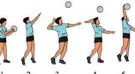
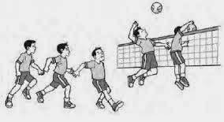
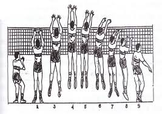

Tentang Bola Voli
Ditulis oleh @awithlieee._, pada 3 November 2024
Sejarah Bola Voli
Pada awal penemuannya, olahraga permainan bola voli ini diberi nama Mintonette. Olahraga ini pertama kali ditemukan oleh seorang Instruktur pendidikan jasmani (Director of Phsycal Education) yang bernama William G. Morgan di YMCA pada tanggal 9 Februari 1895, di Holyoke, Massachusetts (Amerika Serikat). Morgan, yang juga merupakan lulusan Springfield College of YMCA, menciptakan permainan ini empat tahun setelah diciptakannya olahraga bola basket oleh James Naismith. Olahraga Mintonette ini sebenarnya merupakan sebuah permainan yang diciptakan dengan menggabungkan beberapa jenis permainan, yaitu bola basket, bisbol, tenis, dan bola tangan (handball). Pada awalnya, permainan ini diciptakan khusus bagi anggota YMCA yang sudah tidak berusia muda lagi, sehingga permainan ini pun dibuat tidak seaktif permainan bola basket.
Lapang Bola Voli

(Gambar 1.1 Luas Lapang Bola Voli)
KETERANGAN
-
Ukuran lapang Bola Voli
Ukuran lapangan bola voli yang umum adalah 9 meter x 18 meter. Garis batas serang untuk pemain belakang berjarak 3 meter dari garis tengah (sejajar dengan jaring). Garis tepi lapangan adalah 5 meter.
Bola
Regulasi FIVB menyatakan bahwa bola harus bulat, memiliki keliling lingkaran 65 hingga 67 cm, terbuat dari kulit asli atau sintetis dengan sebuah bola dalam yang terbuat dari karet atau sejenisnya, dengan berat 260 hingga 280 gram. Tekanan dalam dari bola tersebut hendaknya sekitar 0.30 hingga 0.325 kg/cm2 (4.26-4.61 psi, 294.3-318.82 mbar atau hPa).
Net
Panjang 9,5 sampai 10 meter, tinggi net putra 2,43 meter dan 2,24 meter untuk net putri. Lebarnya 1 meter (39,4 in)
TEKNIK PERMAINAN BOLA VOLI
Servis
Servis merupakan salah satu teknik dasar yang sering digunakan untuk memulai suatu pertandingan bola voli. Servis sendiri pada mulanya digunakan untuk melayani lawan ketika melakukan penyerangan, tetapi servis kemudian digunakan untuk menyerang lawan sesuai dengan perkembangan zaman. Servis juga biasa digunakan sebagai teknik dasar dalam bermain bola voli dan merupakan hal yang penting untuk mengacaukan pertahanan lawan dan menyulitkan lawan untuk melakukan serangan. Ada 2 golongan servis yaitu servis tangan bawah dan servis tangan atas.
(Gambar 2.1 Servis Bola Voli)
Passing Bawah

(Gambar 3.1 Contoh paassing bawah)
Passing Atas

Gambar3.2 Contoh Passing atas
Smash
Dengan membentuk serangan pukulan yang keras waktu bola berada di atas jaring untuk dimasukkan ke daerah lawan. Untuk melakukan dengan baik perlu memperhatikan awalan, tolakan, pukulan, dan pendaratan.
(Gambar 4.1 Contoh smash)
Membendung (Block)
Pengertian blok dalam permainan bola voli adalah sebuah usaha membendung serangan lawan yang berupa smash agar tidak menghasilkan poin. Dengan daya upaya di dekat jaring untuk mencoba menahan/menghalangi bola yang datang dari daerah lawan.

Gambar 5.1 ontoh Membndung (Block)
Jika mau tau lebih lanjut bisa klik ---> Sumber